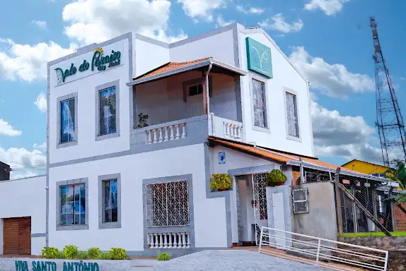
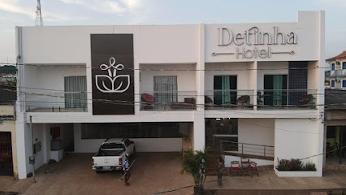
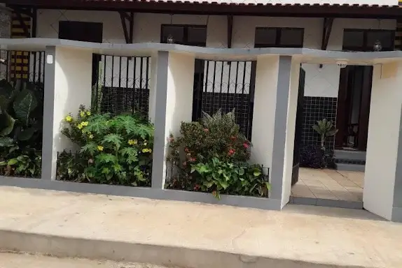
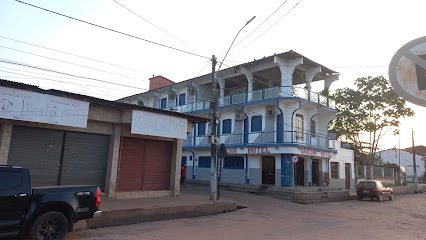

Onde ficar
Opções de hotéis e pousadas para tornar a estadia em Alenquer ainda mais confortável.

Vale do Paraiso City Hotel
Localizado na região central de Alenquer, o Vale do Paraíso City Hotel oferece uma opção prática de hospedagem para quem deseja estar próximo à movimentação da cidade. O hotel conta com apartamentos climatizados, frigobar, TV digital, Wi-Fi e café da manhã regional, além de serviços voltados tanto a visitantes quanto a viagens a trabalho.

Detinha Hotel
Situado no centro da cidade, o Detinha Hotel reúne uma estrutura completa para receber visitantes em Alenquer. Entre os serviços disponíveis estão apartamentos climatizados, frigobar, Wi-Fi, TV, lavanderia e café da manhã, além de piscina, estacionamento privativo e espaço para eventos.

Hotel Pepita
O Hotel Pepita está localizado na região central de Alenquer e oferece uma alternativa prática para quem visita a cidade. A estrutura inclui apartamentos com ar-condicionado, frigobar, TV, Wi-Fi e café da manhã regional, além de lavanderia, estacionamento privativo e espaço para eventos.

Gaucha Hotel
Localizado na região central de Alenquer, o Gaúcha Hotel oferece hospedagem com estrutura voltada ao conforto e à praticidade. Seus apartamentos contam com ar-condicionado, frigobar e televisão, enquanto o hotel também disponibiliza Wi-Fi, café da manhã regional, lavanderia e espaço para eventos.